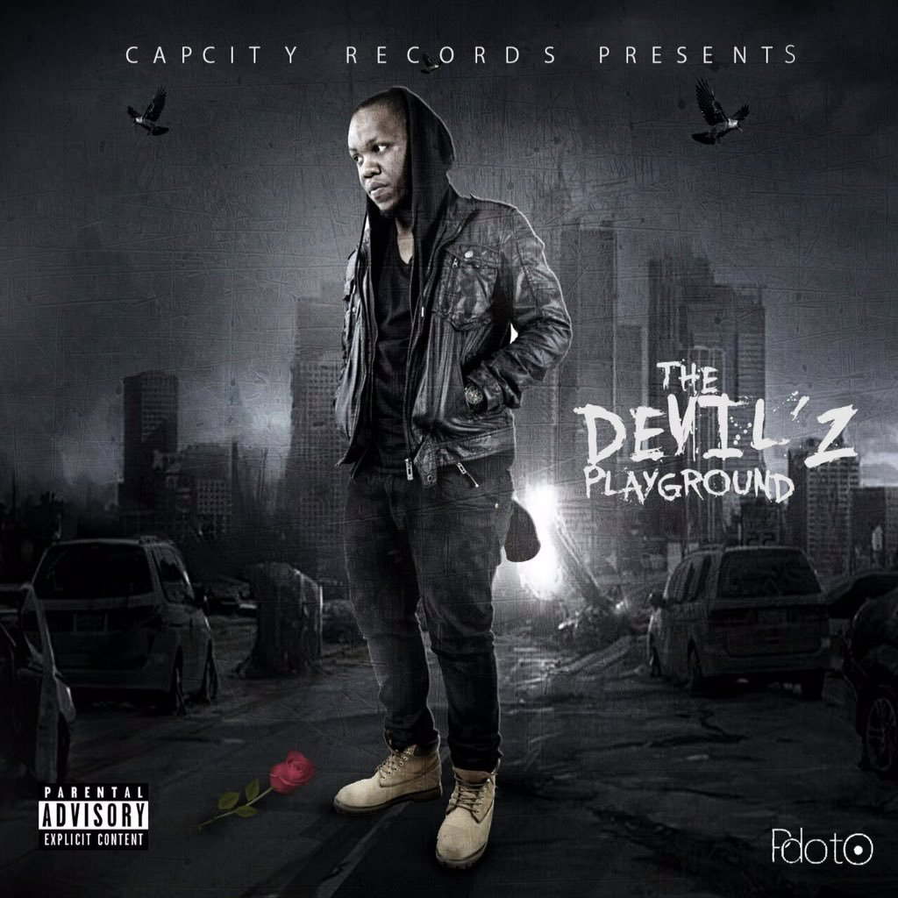

-

Under The Sun (UTS)
Under The Sun, South African Prolific rapper PdotO as come through with his much anticipated studio album titled Under The Sun. The album Under The Sun is coming after much promotion from the star. Under The Sun album is a 17 track album which feature several artists on it.
-

Devil's Playground
Under The Sun, South African Prolific rapper PdotO as come through with his much anticipated studio album titled Under The Sun. The album Under The Sun is coming after much promotion from the star. Under The Sun album is a 17 track album which feature several artists on it.